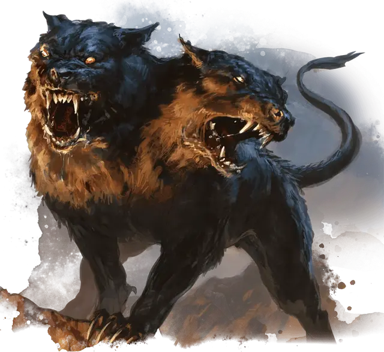

Двуглавый цербер
Two-Headed Cerberus
Средний Монстр, законно-злой

Класс Доспеха 12
Хиты 39 (6к8 + 12)
Скорость 40 футов
| мод | спас | ||
|---|---|---|---|
| СИЛ | 15 | +2 | +2 |
| ЛОВ | 14 | +2 | +2 |
| ТЕЛ | 14 | +2 | +2 |
| мод | спас | ||
|---|---|---|---|
| ИНТ | 3 | −4 | −4 |
| МДР | 13 | +1 | +1 |
| ХАР | 6 | −2 | −2 |
Навыки Восприятие +5, Скрытность +4
Иммунитет к урону некротическая энергия, огонь
Иммунитет к состояниям глухота, испуг, истощение, ослепление, очарование, ошеломление
Чувства тёмное зрение 60 футов, пассивное Восприятие 15
Опасность 2 (450 опыта)
Бонус мастерства +2
Особенности
Агрессивный. Цербер может бонусным действием переместиться на расстояние, не превышающее его скорость, в сторону видимого враждебного существа.
Многоголовый. Цербера нельзя застать врасплох, и он с преимуществом совершает спасброски против потери сознания.
Тактика стаи. Цербер совершает с преимуществом броски атаки по существу, если как минимум один союзник цербера находится в пределах 5 футов от этого существа, и этот союзник дееспособен.
Действия
Мультиатака. Цербер совершает две атаки Укусом.
Укус. Рукопашная атака оружием:. +4 к попаданию, досягаемость 5 футов, одна цель. Попадание: 5 (1к6 + 2) колющего урона плюс 2 (1к4) урона огнём.
Оружие дыхания (Перезарядка 5-6). Цербер выдыхает 15-футовый конус расплавленной породы. Каждое существо в конусе должно совершить спасбросок Ловкости Сл 12, получая 10 (3к6) урона огнём при провале или половину этого урона при успешном. При провале существо также становится опутанным затвердевающим камнем. Существо может действием совершить проверку Силы (Атлетика) Сл 12, высвобождая себя или существо в пределах досягаемости из под камней в случае успеха. Камень имеет КД 17 и 10 хитов, и он обладает иммунитетом к урону огнём, ядом и психической энергии.
Описание
Считающиеся низшей породой церберов, которые скрещивались со смертными волками, двуглавые церберы обычно бродят по смертному берегу реки Тартикс. Там они обычно игнорируют или лишь скромно угрожают душам умерших. Однако это не относится к самим смертным, и они охотно нападают на тех, кто слишком близко подходит к границам Подземного царства.
Церберы
Церберы, которых боятся как живые, так и мертвые, патрулируют оба берега реки Тартикс. Эти многоголовые псы Подземного царства выдыхают потоки расплавленного камня, которые обжигают и заключают в плен тех, кто нарушает границы жизни и смерти. Большинство церберов испытывают безграничную жажду свежего мяса, особенно плоти гуманоидов. Известно, что злодеи использовали этот голод, заманивая церберов подальше от реки и натравливая их на поселения смертных.